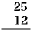
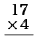

| 風の又三郎 | |
| 宮沢 賢治 | |
| (2012) | |
風の又三郎
宮沢賢治
どっどど どどうど どどうど どどう
青いくるみも吹きとばせ
すっぱいかりんも吹きとばせ
どっどど どどうど どどうど どどう
谷川の岸に小さな学校がありました。
教室はたった一つでしたが生徒は三年生がないだけで、あとは一年から六年までみんなありました。運動場もテニスコートのくらいでしたが、すぐうしろは栗
の木のあるきれいな草の山でしたし、運動場のすみにはごぼごぼつめたい水を噴
く岩穴もあったのです。
さわやかな九月一日の朝でした。青ぞらで風がどうと鳴り、日光は運動場いっぱいでした。黒い雪袴
をはいた二人の一年生の子がどてをまわって運動場にはいって来て、まだほかにだれも来ていないのを見て、「ほう、おら一等だぞ。一等だぞ。」とかわるがわる叫びながら大よろこびで門をはいって来たのでしたが、ちょっと教室の中を見ますと、二人
ともまるでびっくりして棒立ちになり、それから顔を見合わせてぶるぶるふるえましたが、ひとりはとうとう泣き出してしまいました。というわけは、そのしんとした朝の教室のなかにどこから来たのか、まるで顔も知らないおかしな赤い髪の子供がひとり、いちばん前の机にちゃんとすわっていたのです。そしてその机といったらまったくこの泣いた子の自分の机だったのです。
もひとりの子ももう半分泣きかけていましたが、それでもむりやり目をりんと張って、そっちのほうをにらめていましたら、ちょうどそのとき、川上から、
「ちょうはあ かぐり ちょうはあ かぐり。」と高く叫ぶ声がして、それからまるで大きなからすのように、嘉助
がかばんをかかえてわらって運動場へかけて来ました。と思ったらすぐそのあとから佐太郎
だの耕助
だのどやどややってきました。
「なして泣いでら、うなかもたのが。」嘉助が泣かないこどもの肩をつかまえて言いました。するとその子もわあと泣いてしまいました。おかしいとおもってみんながあたりを見ると、教室の中にあの赤毛のおかしな子がすまして、しゃんとすわっているのが目につきました。
みんなはしんとなってしまいました。だんだんみんな女の子たちも集まって来ましたが、だれもなんとも言えませんでした。
赤毛の子どもはいっこうこわがるふうもなくやっぱりちゃんとすわって、じっと黒板を見ています。すると六年生の一郎
が来ました。一郎はまるでおとなのようにゆっくり大またにやってきて、みんなを見て、
「何
した。」とききました。
みんなははじめてがやがや声をたててその教室の中の変な子を指さしました。一郎はしばらくそっちを見ていましたが、やがて鞄
をしっかりかかえて、さっさと窓の下へ行きました。
みんなもすっかり元気になってついて行きました。
「だれだ、時間にならないに教室へはいってるのは。」一郎は窓へはいのぼって教室の中へ顔をつき出して言いました。
「お天気のいい時教室さはいってるづど先生にうんとしからえるぞ。」窓の下の耕助が言いました。
「しからえでもおら知らないよ。」嘉助が言いました。
「早ぐ出はって来
、出はって来。」一郎が言いました。けれどもそのこどもはきょろきょろ室
の中やみんなのほうを見るばかりで、やっぱりちゃんとひざに手をおいて腰掛けにすわっていました。
ぜんたいその形からが実におかしいのでした。変てこなねずみいろのだぶだぶの上着を着て、白い半ずぼんをはいて、それに赤い革
の半靴
をはいていたのです。
それに顔といったらまるで熟したりんごのよう、ことに目はまん丸でまっくろなのでした。いっこう言葉が通じないようなので一郎も全く困ってしまいました。
「あいづは外国人だな。」
「学校さはいるのだな。」みんなはがやがやがやがや言いました。ところが五年生の嘉助がいきなり、
「ああ三年生さはいるのだ。」と叫びましたので、
「ああそうだ。」と小さいこどもらは思いましたが、一郎はだまってくびをまげました。
変なこどもはやはりきょろきょろこっちを見るだけ、きちんと腰掛けています。
そのとき風がどうと吹いて来て教室のガラス戸はみんながたがた鳴り、学校のうしろの山の萱
や栗
の木はみんな変に青じろくなってゆれ、教室のなかのこどもはなんだかにやっとわらってすこしうごいたようでした。
すると嘉助がすぐ叫びました。
「ああわかった。あいつは風の又三郎
だぞ。」
そうだっとみんなもおもったとき、にわかにうしろのほうで五郎が、
「わあ、痛いぢゃあ。」と叫びました。
みんなそっちへ振り向きますと、五郎が耕助に足のゆびをふまれて、まるでおこって耕助をなぐりつけていたのです。すると耕助もおこって、
「わあ、われ悪くてでひと撲
いだなあ。」と言ってまた五郎をなぐろうとしました。
五郎はまるで顔じゅう涙だらけにして耕助に組み付こうとしました。そこで一郎が間へはいって嘉助が耕助を押えてしまいました。
「わあい、けんかするなったら、先生あちゃんと職員室に来てらぞ。」と一郎が言いながらまた教室のほうを見ましたら、一郎はにわかにまるでぽかんとしてしまいました。
たったいままで教室にいたあの変な子が影もかたちもないのです。みんなもまるでせっかく友だちになった子うまが遠くへやられたよう、せっかく捕
った山雀
に逃げられたように思いました。
風がまたどうと吹いて来て窓ガラスをがたがた言わせ、うしろの山の萱
をだんだん上流のほうへ青じろく波だてて行きました。
「わあ、うなだけんかしたんだがら又三郎いなぐなったな。」嘉助がおこって言いました。
みんなもほんとうにそう思いました。五郎はじつに申しわけないと思って、足の痛いのも忘れてしょんぼり肩をすぼめて立ったのです。
「やっぱりあいつは風の又三郎だったな。」
「二百十日で来たのだな。」
「靴
はいでだたぞ。」
「服も着でだたぞ。」
「髪赤くておかしやづだったな。」
「ありゃありゃ、又三郎おれの机の上さ石かけ乗せでったぞ。」二年生の子が言いました。見るとその子の机の上にはきたない石かけが乗っていたのです。
「そうだ、ありゃ。あそごのガラスもぶっかしたぞ。」
「そだないであ。あいづあ休み前に嘉助石ぶっつけだのだな。」
「わあい。そだないであ。」と言っていたとき、これはまたなんというわけでしょう。先生が玄関から出て来たのです。先生はぴかぴか光る呼び子を右手にもって、もう集まれのしたくをしているのでしたが、そのすぐうしろから、さっきの赤い髪の子が、まるで権現
さまの尾
っぱ持ちのようにすまし込んで、白いシャッポをかぶって、先生についてすぱすぱとあるいて来たのです。
みんなはしいんとなってしまいました。やっと一郎が「先生お早うございます。」と言いましたのでみんなもついて、
「先生お早うございます。」と言っただけでした。
「みなさん。お早う。どなたも元気ですね。では並んで。」先生は呼び子をビルルと吹きました。それはすぐ谷の向こうの山へひびいてまたビルルルと低く戻
ってきました。
すっかりやすみの前のとおりだとみんなが思いながら六年生は一人、五年生は七人、四年生は六人、一二年生は十二人、組ごとに一列に縦にならびました。
二年は八人、一年生は四人前へならえをしてならんだのです。
するとその間あのおかしな子は、何かおかしいのかおもしろいのか奥歯で横っちょに舌をかむようにして、じろじろみんなを見ながら先生のうしろに立っていたのです。すると先生は、高田
さんこっちへおはいりなさいと言いながら五年生の列のところへ連れて行って、丈
を嘉助とくらべてから嘉助とそのうしろのきよの間へ立たせました。
みんなはふりかえってじっとそれを見ていました。
先生はまた玄関の前に戻って、
「前へならえ。」と号令をかけました。
みんなはもう一ぺん前へならえをしてすっかり列をつくりましたが、じつはあの変な子がどういうふうにしているのか見たくて、かわるがわるそっちをふりむいたり横目でにらんだりしたのでした。するとその子はちゃんと前へならえでもなんでも知ってるらしく平気で両腕を前へ出して、指さきを嘉助のせなかへやっと届くくらいにしていたものですから、嘉助はなんだかせなかがかゆく、くすぐったいというふうにもじもじしていました。
「直れ。」先生がまた号令をかけました。
「一年から順に前へおい。」そこで一年生はあるき出し、まもなく二年生もあるき出してみんなの前をぐるっと通って、右手の下駄箱
のある入り口にはいって行きました。四年生があるき出すとさっきの子も嘉助のあとへついて大威張りであるいて行きました。前へ行った子もときどきふりかえって見、あとの者もじっと見ていたのです。
まもなくみんなははきものを下駄箱
に入れて教室へはいって、ちょうど外へならんだときのように組ごとに一列に机にすわりました。さっきの子もすまし込んで嘉助のうしろにすわりました。ところがもう大さわぎです。
「わあ、おらの机さ石かけはいってるぞ。」
「わあ、おらの机代わってるぞ。」
「キッコ、キッコ、うな通信簿持って来たが。おら忘れで来たぢゃあ。」
「わあい、さの、木ペン借せ、木ペン借せったら。」
「わあがない。ひとの雑記帳とってって。」
そのとき先生がはいって来ましたのでみんなもさわぎながらとにかく立ちあがり、一郎がいちばんうしろで、
「礼。」と言いました。
みんなはおじぎをする間はちょっとしんとなりましたが、それからまたがやがやがやがや言いました。
「しずかに、みなさん。しずかにするのです。」先生が言いました。
「しっ、悦治
、やがましったら、嘉助え、喜
っこう。わあい。」と一郎がいちばんうしろからあまりさわぐものを一人ずつしかりました。
みんなはしんとなりました。
先生が言いました。
「みなさん、長い夏のお休みはおもしろかったですね。みなさんは朝から水泳ぎもできたし、林の中で鷹
にも負けないくらい高く叫んだり、またにいさんの草刈りについて上
の野原へ行ったりしたでしょう。けれどももうきのうで休みは終わりました。これからは第二学期で秋です。むかしから秋はいちばんからだもこころもひきしまって、勉強のできる時だといってあるのです。ですから、みなさんもきょうからまたいっしょにしっかり勉強しましょう。それからこのお休みの間にみなさんのお友だちが一人ふえました。それはそこにいる高田さんです。そのかたのおとうさんはこんど会社のご用で上の野原の入り口へおいでになっていられるのです。高田さんはいままでは北海道の学校におられたのですが、きょうからみなさんのお友だちになるのですから、みなさんは学校で勉強のときも、また栗拾
いや魚
とりに行くときも、高田さんをさそうようにしなければなりません。わかりましたか。わかった人は手をあげてごらんなさい。」
すぐみんなは手をあげました。その高田とよばれた子も勢いよく手をあげましたので、ちょっと先生はわらいましたが、すぐ、
「わかりましたね、ではよし。」と言いましたので、みんなは火の消えたように一ぺんに手をおろしました。
ところが嘉助がすぐ、
「先生。」といってまた手をあげました。
「はい。」先生は嘉助を指さしました。
「高田さん名はなんて言うべな。」
「高田三郎
さんです。」
「わあ、うまい、そりゃ、やっぱり又三郎だな。」嘉助はまるで手をたたいて机の中で踊るようにしましたので、大きなほうの子どもらはどっと笑いましたが、下の子どもらは何かこわいというふうにしいんとして三郎のほうを見ていたのです。
先生はまた言いました。
「きょうはみなさんは通信簿と宿題をもってくるのでしたね。持って来た人は机の上へ出してください。私がいま集めに行きますから。」
みんなはばたばた鞄
をあけたりふろしきをといたりして、通信簿と宿題を机の上に出しました。そして先生が一年生のほうから順にそれを集めはじめました。そのときみんなはぎょっとしました。というわけはみんなのうしろのところにいつか一人の大人
が立っていたのです。その人は白いだぶだぶの麻服を着て黒いてかてかしたはんけちをネクタイの代わりに首に巻いて、手には白い扇をもって軽くじぶんの顔を扇
ぎながら少し笑ってみんなを見おろしていたのです。さあみんなはだんだんしいんとなって、まるで堅くなってしまいました。
ところが先生は別にその人を気にかけるふうもなく、順々に通信簿を集めて三郎の席まで行きますと、三郎は通信簿も宿題帳もないかわりに両手をにぎりこぶしにして二つ机の上にのせていたのです。先生はだまってそこを通りすぎ、みんなのを集めてしまうとそれを両手でそろえながらまた教壇に戻りました。
「では宿題帳はこの次の土曜日に直して渡しますから、きょう持って来なかった人は、あしたきっと忘れないで持って来てください。それは悦治さんと勇治
さんと良作
さんとですね。ではきょうはここまでです。あしたからちゃんといつものとおりのしたくをしておいでなさい。それから四年生と六年生の人は、先生といっしょに教室のお掃除
をしましょう。ではここまで。」
一郎が気をつけ、と言いみんなは一ぺんに立ちました。うしろの大人
も扇を下にさげて立ちました。
「礼。」先生もみんなも礼をしました。うしろの大人も軽く頭を下げました。それからずうっと下の組の子どもらは一目散に教室を飛び出しましたが、四年生の子どもらはまだもじもじしていました。
すると三郎はさっきのだぶだぶの白い服の人のところへ行きました。先生も教壇をおりてその人のところへ行きました。
「いやどうもご苦労さまでございます。」その大人はていねいに先生に礼をしました。
「じきみんなとお友だちになりますから。」先生も礼を返しながら言いました。
「何ぶんどうかよろしくおねがいいたします。それでは。」その人はまたていねいに礼をして目で三郎に合図すると、自分は玄関のほうへまわって外へ出て待っていますと、三郎はみんなの見ている中を目をりんとはってだまって昇降口から出て行って追いつき、二人は運動場を通って川下のほうへ歩いて行きました。
運動場を出るときその子はこっちをふりむいて、じっと学校やみんなのほうをにらむようにすると、またすたすた白服の大人
について歩いて行きました。
「先生、あの人は高田さんのとうさんですか。」一郎が箒
をもちながら先生にききました。
「そうです。」
「なんの用で来たべ。」
「上の野原の入り口にモリブデンという鉱石ができるので、それをだんだん掘るようにするためだそうです。」
「どこらあだりだべな。」
「私もまだよくわかりませんが、いつもみなさんが馬をつれて行くみちから、少し川下へ寄ったほうなようです。」
「モリブデン何にするべな。」
「それは鉄とまぜたり、薬をつくったりするのだそうです。」
「そだら又三郎も掘るべが。」嘉助が言いました。
「又三郎だない。高田三郎だぢゃ。」佐太郎が言いました。
「又三郎だ又三郎だ。」嘉助が顔をまっ赤
にしてがん張りました。
「嘉助、うなも残ってらば掃除
してすけろ。」一郎が言いました。
「わあい。やんたぢゃ。きょう四年生ど六年生だな。」
嘉助は大急ぎで教室をはねだして逃げてしまいました。
風がまた吹いて来て窓ガラスはまたがたがた鳴り、ぞうきんを入れたバケツにも小さな黒い波をたてました。
次の日一郎はあのおかしな子供が、きょうからほんとうに学校へ来て本を読んだりするかどうか早く見たいような気がして、いつもより早く嘉助をさそいました。ところが嘉助のほうは一郎よりもっとそう考えていたと見えて、とうにごはんもたべ、ふろしきに包んだ本ももって家の前へ出て一郎を待っていたのでした。二人は途中もいろいろその子のことを話しながら学校へ来ました。すると運動場には小さな子供らがもう七八人集まっていて、棒かくしをしていましたが、その子はまだ来ていませんでした。またきのうのように教室の中にいるのかと思って中をのぞいて見ましたが、教室の中はしいんとしてだれもいず、黒板の上にはきのう掃除のときぞうきんでふいた跡がかわいてぼんやり白い縞
になっていました。
「きのうのやつまだ来てないな。」一郎が言いました。
「うん。」嘉助も言ってそこらを見まわしました。
一郎はそこで鉄棒の下へ行って、じゃみ
上がりというやり方で、無理やりに鉄棒の上にのぼり両腕をだんだん寄せて右の腕木に行くと、そこへ腰掛けてきのう三郎の行ったほうをじっと見おろして待っていました。谷川はそっちのほうへきらきら光ってながれて行き、その下の山の上のほうでは風も吹いているらしく、ときどき萱
が白く波立っていました。
嘉助もやっぱりその柱の下でじっとそっちを見て待っていました。ところが二人はそんなに長く待つこともありませんでした。それは突然三郎がその下手のみちから灰いろの鞄
を右手にかかえて走るようにして出て来たのです。
「来たぞ。」と一郎が思わず下にいる嘉助へ叫ぼうとしていますと、早くも三郎はどてをぐるっとまわって、どんどん正門をはいって来ると、
「お早う。」とはっきり言いました。みんなはいっしょにそっちをふり向きましたが、一人も返事をしたものがありませんでした。
それは返事をしないのではなくて、みんなは先生にはいつでも「お早うございます。」というように習っていたのですが、お互いに「お早う。」なんて言ったことがなかったのに三郎にそう言われても、一郎や嘉助はあんまりにわかで、また勢いがいいのでとうとう臆
してしまって一郎も嘉助も口の中でお早うというかわりに、もにゃもにゃっと言ってしまったのでした。
ところが三郎のほうはべつだんそれを苦にするふうもなく、二三歩また前へ進むとじっと立って、そのまっ黒な目でぐるっと運動場じゅうを見まわしました。そしてしばらくだれか遊ぶ相手がないかさがしているようでした。けれどもみんなきょろきょろ三郎のほうはみていても、やはり忙しそうに棒かくしをしたり三郎のほうへ行くものがありませんでした。三郎はちょっと具合が悪いようにそこにつっ立っていましたが、また運動場をもう一度見まわしました。
それからぜんたいこの運動場は何間
あるかというように、正門から玄関まで大またに歩数を数えながら歩きはじめました。一郎は急いで鉄棒をはねおりて嘉助とならんで、息をこらしてそれを見ていました。
そのうち三郎は向こうの玄関の前まで行ってしまうと、こっちへ向いてしばらく暗算をするように少し首をまげて立っていました。
みんなはやはりきろきろそっちを見ています。三郎は少し困ったように両手をうしろへ組むと向こう側の土手のほうへ職員室の前を通って歩きだしました。
その時風がざあっと吹いて来て土手の草はざわざわ波になり、運動場のまん中でさあっと塵
があがり、それが玄関の前まで行くと、きりきりとまわって小さなつむじ風になって、黄いろな塵は瓶
をさかさまにしたような形になって屋根より高くのぼりました。
すると嘉助が突然高く言いました。
「そうだ。やっぱりあいづ又三郎だぞ。あいづ何かするときっと風吹いてくるぞ。」
「うん。」一郎はどうだかわからないと思いながらもだまってそっちを見ていました。三郎はそんなことにはかまわず土手のほうへやはりすたすた歩いて行きます。
そのとき先生がいつものように呼び子をもって玄関を出て来たのです。
「お早うございます。」小さな子どもらはみんな集まりました。
「お早う。」先生はちらっと運動場を見まわしてから、「ではならんで。」と言いながらビルルッと笛を吹きました。
みんなは集まってきてきのうのとおりきちんとならびました。三郎もきのう言われた所へちゃんと立っています。
先生はお日さまがまっ正面なのですこしまぶしそうにしながら号令をだんだんかけて、とうとうみんなは昇降口から教室へはいりました。そして礼がすむと先生は、
「ではみなさんきょうから勉強をはじめましょう。みなさんはちゃんとお道具をもってきましたね。では一年生（と二年生）の人はお習字のお手本と硯
と紙を出して、二年生と四年生の人は算術帳と雑記帳と鉛筆を出して、五年生と六年生の人は国語の本を出してください。」
さあするとあっちでもこっちでも大さわぎがはじまりました。中にも三郎のすぐ横の四年生の机の佐太郎が、いきなり手をのばして二年生のかよの鉛筆をひらりととってしまったのです。かよは佐太郎の妹でした。するとかよは、
「うわあ、兄
な、木ペン取
てわかんないな。」と言いながら取り返そうとしますと佐太郎が、
「わあ、こいつおれのだなあ。」と言いながら鉛筆をふところの中へ入れて、あとはシナ人がおじぎするときのように両手を袖
へ入れて、机へぴったり胸をくっつけました。するとかよは立って来て、
「兄
な、兄なの木ペンはきのう小屋でなくしてしまったけなあ。よこせったら。」と言いながら一生けん命とり返そうとしましたが、どうしてももう佐太郎は机にくっついた大きな蟹
の化石みたいになっているので、とうとうかよは立ったまま口を大きくまげて泣きだしそうになりました。
すると三郎は国語の本をちゃんと机にのせて困ったようにしてこれを見ていましたが、かよがとうとうぼろぼろ涙をこぼしたのを見ると、だまって右手に持っていた半分ばかりになった鉛筆を佐太郎の目の前の机に置きました。
すると佐太郎はにわかに元気になって、むっくり起き上がりました。そして、
「くれる？」と三郎にききました。三郎はちょっとまごついたようでしたが覚悟したように、「うん。」と言いました。すると佐太郎はいきなりわらい出してふところの鉛筆をかよの小さな赤い手に持たせました。
先生は向こうで一年生の子の硯
に水をついでやったりしていましたし、嘉助は三郎の前ですから知りませんでしたが、一郎はこれをいちばんうしろでちゃんと見ていました。そしてまるでなんと言ったらいいかわからない、変な気持ちがして歯をきりきり言わせました。
「では二年生のひとはお休みの前にならった引き算をもう一ぺん習ってみましょう。これを勘定してごらんなさい。」先生は黒板に
と書きました。二年生のこどもらはみんな一生けん命にそれを雑記帳にうつしました。かよも頭を雑記帳へくっつけるようにしています。「四年生の人はこれを置いて。」
と書きました。
四年生は佐太郎をはじめ喜蔵も甲助
もみんなそれをうつしました。
「五年生の人は読本
の（二字空白）ページの（二字空白）課をひらいて声をたてないで読めるだけ読んでごらんなさい。わからない字は雑記帳へ拾っておくのです。」五年生もみんな言われたとおりしはじめました。
「一郎さんは読本の（二字空白）ページをしらべてやはり知らない字を書き抜いてください。」
それがすむと先生はまた教壇をおりて、一年生の習字を一人一人見てあるきました。
三郎は両手で本をちゃんと机の上へもって、言われたところを息もつかずじっと読んでいました。けれども雑記帳へは字を一つも書き抜いていませんでした。それはほんとうに知らない字が一つもないのか、たった一本の鉛筆を佐太郎にやってしまったためか、どっちともわかりませんでした。
そのうち先生は教壇へ戻って二年生と四年生の算術の計算をして見せてまた新しい問題を出すと、今度は五年生の生徒の雑記帳へ書いた知らない字を黒板へ書いて、それにかなとわけをつけました。そして、
「では嘉助さん、ここを読んで。」と言いました。
嘉助は二三度ひっかかりながら先生に教えられて読みました。
三郎もだまって聞いていました。
先生も本をとって、じっと聞いていましたが、十行ばかり読むと、
「そこまで。」と言ってこんどは先生が読みました。
そうして一まわり済むと、先生はだんだんみんなの道具をしまわせました。
それから「ではここまで。」と言って教壇に立ちますと一郎がうしろで、
「気をつけい。」と言いました。そして礼がすむと、みんな順に外へ出てこんどは外へならばずにみんな別れ別れになって遊びました。
二時間目は一年生から六年生までみんな唱歌でした。そして先生がマンドリンを持って出て来て、みんなはいままでに習ったのを先生のマンドリンについて五つもうたいました。
三郎もみんな知っていて、みんなどんどん歌いました。そしてこの時間はたいへん早くたってしまいました。
三時間目になるとこんどは二年生と四年生が国語で、五年生と六年生が数学でした。先生はまた黒板に問題を書いて五年生と六年生に計算させました。しばらくたって一郎が答えを書いてしまうと、三郎のほうをちょっと見ました。
すると三郎は、どこから出したか小さな消し炭で雑記帳の上へがりがりと大きく運算していたのです。
次の朝、空はよく晴れて谷川はさらさら鳴りました。一郎は途中で嘉助と佐太郎と悦治をさそっていっしょに三郎のうちのほうへ行きました。
学校の少し下流で谷川をわたって、それから岸で楊
の枝をみんなで一本ずつ折って、青い皮をくるくるはいで鞭
をこしらえて手でひゅうひゅう振りながら、上の野原への道をだんだんのぼって行きました。みんなは早くも登りながら息をはあはあしました。
「又三郎ほんとにあそごのわき水まで来て待ぢでるべが。」
「待ぢでるんだ。又三郎うそこがないもな。」
「ああ暑う、風吹げばいいな。」
「どごがらだが風吹いでるぞ。」
「又三郎吹がせでらべも。」
「なんだがお日さんぼやっとして来たな。」
空に少しばかりの白い雲が出ました。そしてもうだいぶのぼっていました。谷のみんなの家がずうっと下に見え、一郎のうちの木小屋の屋根が白く光っています。
道が林の中に入り、しばらく道はじめじめして、あたりは見えなくなりました。そしてまもなくみんなは約束のわき水の近くに来ました。するとそこから、
「おうい。みんな来たかい。」と三郎の高く叫ぶ声がしました。
みんなはまるでせかせかと走ってのぼりました。向こうの曲がり角
の所に三郎が小さなくちびるをきっと結んだまま、三人のかけ上って来るのを見ていました。
三人はやっと三郎の前まで来ました。けれどもあんまり息がはあはあしてすぐには何も言えませんでした。嘉助などはあんまりもどかしいもんですから、空へ向いて「ホッホウ。」と叫んで早く息を吐いてしまおうとしました。すると三郎は大きな声で笑いました。
「ずいぶん待ったぞ。それにきょうは雨が降るかもしれないそうだよ。」
「そだら早ぐ行ぐべすさ。おらまんつ水飲んでぐ。」三人は汗をふいてしゃがんで、まっ白な岩からごぼごぼ噴
きだす冷たい水を何べんもすくってのみました。
「ぼくのうちはここからすぐなんだ。ちょうどあの谷の上あたりなんだ。みんなで帰りに寄ろうねえ。」
「うん。まんつ野原さ行ぐべすさ。」
みんながまたあるきはじめたときわき水は何かを知らせるようにぐうっと鳴り、そこらの木もなんだかざあっと鳴ったようでした。
五人は林のすその藪
の間を行ったり岩かけの小さくくずれる所を何べんも通ったりして、もう上の野原の入り口に近くなりました。
みんなはそこまで来ると来たほうからまた西のほうをながめました。
光ったりかげったり幾通りにも重なったたくさんの丘の向こうに、川に沿ったほんとうの野原がぼんやり碧
くひろがっているのでした。
「ありゃ、あいづ川だぞ。」
「春日明神
さんの帯のようだな。」三郎が言いました。
「何のようだど。」一郎がききました。
「春日明神さんの帯のようだ。」
「うな神さんの帯見だごとあるが。」
「ぼく北海道で見たよ。」
みんなはなんのことだかわからずだまってしまいました。
ほんとうにそこはもう上の野原の入り口で、きれいに刈られた草の中に一本の大きな栗
の木が立って、その幹は根もとの所がまっ黒に焦げて大きな洞
のようになり、その枝には古い繩
や、切れたわらじなどがつるしてありました。
「もう少し行ぐづどみんなして草刈ってるぞ。それから馬のいるどごもあるぞ。」一郎は言いながら先に立って刈った草のなかの一ぽんみちをぐんぐん歩きました。
三郎はその次に立って、
「ここには熊
いないから馬をはなしておいてもいいなあ。」と言って歩きました。
しばらく行くとみちばたの大きな楢
の木の下に、繩で編んだ袋が投げ出してあって、たくさんの草たばがあっちにもこっちにもころがっていました。
せなかに草束をしょった二匹の馬が、一郎を見て鼻をぷるぷる鳴らしました。
「兄
な、いるが。兄
な、来たぞ。」一郎は汗をぬぐいながら叫びました。
「おおい。ああい。そこにいろ。今行ぐぞ。」ずうっと向こうのくぼみで、一郎のにいさんの声がしました。
日はぱっと明るくなり、にいさんがそっちの草の中から笑って出て来ました。
「善
ぐ来たな。みんなも連れで来たのが。善
ぐ来た。戻りに馬こ連れでてけろな。きょうあ午
まがらきっと曇る。おらもう少し草集めて仕舞
がらな、うなだ遊ばばあの土手の中さはいってろ。まだ牧馬の馬二十匹ばかりはいるがらな。」
にいさんは向こうへ行こうとして、振り向いてまた言いました。
「土手がら外さ出はるなよ。迷ってしまうづどあぶないがらな。午
まになったらまた来るがら。」
「うん。土手の中にいるがら。」
そして一郎のにいさんは行ってしまいました。
空にはうすい雲がすっかりかかり、太陽は白い鏡のようになって、雲と反対に馳
せました。風が出て来てまだ刈っていない草は一面に波を立てます。一郎はさきにたって小さなみちをまっすぐに行くと、まもなくどてになりました。その土手の一とこちぎれたところに二本の丸太の棒を横にわたしてありました。悦治がそれをくぐろうとしますと、嘉助が、
「おらこったなものはずせだぞ。」と言いながら片っぽうのはじをぬいて下におろしましたのでみんなはそれをはね越えて中にはいりました。
向こうの少し小高いところにてかてか光る茶いろの馬が七匹ばかり集まって、しっぽをゆるやかにばしゃばしゃふっているのです。
「この馬みんな千円以上するづもな。来年がらみんな競馬さも出はるのだづぢゃい。」一郎はそばへ行きながら言いました。
馬はみんないままでさびしくってしようなかったというように一郎たちのほうへ寄ってきました。そして鼻づらをずうっとのばして何かほしそうにするのです。
「ははあ、塩をけろづのだな。」みんなは言いながら手を出して馬になめさせたりしましたが、三郎だけは馬になれていないらしく気味わるそうに手をポケットへ入れてしまいました。
「わあ、又三郎馬おっかながるぢゃい。」と悦治が言いました。すると三郎は、
「こわくなんかないやい。」と言いながらすぐポケットの手を馬の鼻づらへのばしましたが、馬が首をのばして舌をべろりと出すと、さっと顔いろを変えてすばやくまた手をポケットへ入れてしまいました。
「わあい、又三郎馬おっかながるぢゃい。」悦治がまた言いました。すると三郎はすっかり顔を赤くしてしばらくもじもじしていましたが、
「そんなら、みんなで競馬やるか。」と言いました。
競馬ってどうするのかとみんな思いました。
すると三郎は、
「ぼく競馬何べんも見たぞ。けれどもこの馬みんな鞍
がないから乗れないや。みんなで一匹ずつ馬を追って、はじめに向こうの、そら、あの大きな木のところに着いたものを一等にしよう。」
「そいづおもしろいな。」嘉助が言いました。
「しからえるぞ。牧夫に見つけらえでがら。」
「大丈夫だよ。競馬に出る馬なんか練習をしていないといけないんだい。」三郎が言いました。
「よしおらこの馬だぞ。」
「おらこの馬だ。」
「そんならぼくはこの馬でもいいや。」みんなは楊
の枝や萱
の穂でしゅうと言いながら馬を軽く打ちました。
ところが馬はちっともびくともしませんでした。やはり下へ首をたれて草をかいだり、首をのばしてそこらのけしきをもっとよく見るというようにしているのです。
一郎がそこで両手をぴしゃんと打ち合わせて、だあ、と言いました。
するとにわかに七匹ともまるでたてがみをそろえてかけ出したのです。
「うまあい。」嘉助ははね上がって走りました。けれどもそれはどうも競馬にはならないのでした。
第一、馬はどこまでも顔をならべて走るのでしたし、それにそんなに競馬するくらい早く走るのでもなかったのです。それでもみんなはおもしろがって、だあだと言いながら一生けん命そのあとを追いました。
馬はすこし行くと立ちどまりそうになりました。みんなもすこしはあはあしましたが、こらえてまた馬を追いました。するといつか馬はぐるっとさっきの小高いところをまわって、さっき五人ではいって来たどての切れた所へ来たのです。
「あ、馬出はる、馬出はる。押えろ 押えろ。」一郎はまっ青
になって叫びました。じっさい馬はどての外へ出たのらしいのでした。どんどん走って、もうさっきの丸太の棒を越えそうになりました。
一郎はまるであわてて、
「どう、どう、どうどう。」と言いながら一生けん命走って行って、やっとそこへ着いてまるでころぶようにしながら手をひろげたときは、そのときはもう二匹は柵
の外へ出ていたのです。
「早ぐ来て押えろ。早ぐ来て。」一郎は息も切れるように叫びながら丸太棒をもとのようにしました。
四人は走って行って急いで丸太をくぐって外へ出ますと、二匹の馬はもう走るでもなく、どての外に立って草を口で引っぱって抜くようにしています。
「そろそろど押えろよ。そろそろど。」と言いながら一郎は一ぴきのくつわについた札のところをしっかり押えました。嘉助と三郎がもう一匹を押えようとそばへ寄りますと、馬はまるでおどろいたようにどてへ沿って一目散に南のほうへ走ってしまいました。
「兄
な、馬あ逃げる、馬あ逃げる。兄
な、馬逃げる。」とうしろで一郎が一生けん命叫んでいます。三郎と嘉助は一生けん命馬を追いました。
ところが馬はもう今度こそほんとうに逃げるつもりらしかったのです。まるで丈
ぐらいある草をわけて高みになったり低くなったり、どこまでも走りました。
嘉助はもう足がしびれてしまって、どこをどう走っているのかわからなくなりました。
それからまわりがまっ蒼
になって、ぐるぐる回り、とうとう深い草の中に倒れてしまいました。馬の赤いたてがみと、あとを追って行く三郎の白いシャッポが終わりにちらっと見えました。
嘉助は、仰向けになって空を見ました。空がまっ白に光って、ぐるぐる回り、そのこちらを薄いねずみ色の雲が、速く速く走っています。そしてカンカン鳴っています。
嘉助はやっと起き上がって、せかせか息しながら馬の行ったほうに歩き出しました。草の中には、今馬と三郎が通った跡らしく、かすかな道のようなものがありました。嘉助は笑いました。そして、（ふん、なあに馬どこかでこわくなってのっこり立ってるさ、）と思いました。
そこで嘉助は、一生懸命それをつけて行きました。
ところがその跡のようなものは、まだ百歩も行かないうちに、おとこえしや、すてきに背の高いあざみの中で、二つにも三つにも分かれてしまって、どれがどれやらいっこうわからなくなってしまいました。
嘉助は「おうい。」と叫びました。
「おう。」とどこかで三郎が叫んでいるようです。思い切って、そのまん中のを進みました。
けれどもそれも、時々切れたり、馬の歩かないような急な所を横ざまに過ぎたりするのでした。
空はたいへん暗く重くなり、まわりがぼうっとかすんで来ました。冷たい風が、草を渡りはじめ、もう雲や霧が切れ切れになって目の前をぐんぐん通り過ぎて行きました。
（ああ、こいつは悪くなって来た。みんな悪いことはこれから集
ってやって来るのだ。）と嘉助は思いました。全くそのとおり、にわかに馬の通った跡は草の中でなくなってしまいました。
（ああ、悪くなった、悪くなった。）嘉助は胸をどきどきさせました。
草がからだを曲げて、パチパチ言ったり、さらさら鳴ったりしました。霧がことに滋
くなって、着物はすっかりしめってしまいました。
嘉助は咽喉
いっぱい叫びました。
「一郎、一郎、こっちさ来う。」ところがなんの返事も聞こえません。黒板から降る白墨の粉のような、暗い冷たい霧の粒が、そこら一面踊りまわり、あたりがにわかにシインとして、陰気に陰気になりました。草からは、もうしずくの音がポタリポタリと聞こえて来ます。
嘉助は、もう早く一郎たちの所へ戻ろうとして急いで引っ返しました。けれどもどうも、それは前に来た所とは違っていたようでした。第一、あざみがあんまりたくさんありましたし、それに草の底にさっきなかった岩かけが、たびたびころがっていました。そしてとうとう聞いたこともない大きな谷が、いきなり目の前に現われました。すすきがざわざわざわっと鳴り、向こうのほうは底知れずの谷のように、霧の中に消えているではありませんか。
風が来ると、すすきの穂は細いたくさんの手をいっぱいのばして、忙しく振って、
「あ、西さん、あ、東さん、あ、西さん、あ、南さん、あ、西さん。」なんて言っているようでした。
嘉助はあんまり見っともなかったので、目をつむって横を向きました。そして急いで引っ返しました。小さな黒い道がいきなり草の中に出て来ました。それはたくさんの馬のひづめの跡でできあがっていたのです。嘉助は夢中で短い笑い声をあげて、その道をぐんぐん歩きました。
けれども、たよりのないことは、みちのはばが五寸ぐらいになったり、また三尺ぐらいに変わったり、おまけになんだかぐるっと回っているように思われました。そして、とうとう大きなてっぺんの焼けた栗
の木の前まで来た時、ぼんやり幾つにも別れてしまいました。
そこはたぶんは、野馬の集まり場所であったでしょう。霧の中に丸い広場のように見えたのです。
嘉助はがっかりして、黒い道をまた戻りはじめました。知らない草穂が静かにゆらぎ、少し強い風が来る時は、どこかで何かが合図をしてでもいるように、一面の草が、それ来たっとみなからだを伏せて避けました。
空が光ってキインキインと鳴っています。
それからすぐ目の前の霧の中に、家の形の大きな黒いものがあらわれました。嘉助はしばらく自分の目を疑って立ちどまっていましたが、やはりどうしても家らしかったので、こわごわもっと近寄って見ますと、それは冷たい大きな黒い岩でした。
空がくるくるくるっと白く揺らぎ、草がバラッと一度にしずくを払いました。
（間違って原の向こう側へおりれば、又三郎もおれも、もう死ぬばかりだ。）と嘉助は半分思うように半分つぶやくようにしました。それから叫びました。
「一郎、一郎、いるが。一郎。」
また明るくなりました。草がみないっせいによろこびの息をします。
「伊佐戸
の町の、電気工夫の童
あ、山男に手足いしばらえてたふだ。」といつかだれかの話した言葉が、はっきり耳に聞こえて来ます。
そして、黒い道がにわかに消えてしまいました。あたりがほんのしばらくしいんとなりました。それから非常に強い風が吹いて来ました。
空が旗のようにぱたぱた光って飜り、火花がパチパチパチッと燃えました。嘉助はとうとう草の中に倒れてねむってしまいました。
＊
そんなことはみんなどこかの遠いできごとのようでした。
もう又三郎がすぐ目の前に足を投げだしてだまって空を見あげているのです。いつかいつものねずみいろの上着の上にガラスのマントを着ているのです。それから光るガラスの靴
をはいているのです。
又三郎の肩には栗
の木の影が青く落ちています。又三郎の影は、また青く草に落ちています。そして風がどんどんどんどん吹いているのです。
又三郎は笑いもしなければ物も言いません。ただ小さなくちびるを強そうにきっと結んだまま黙ってそらを見ています。いきなり又三郎はひらっとそらへ飛びあがりました。ガラスのマントがギラギラ光りました。
＊
ふと嘉助は目をひらきました。灰いろの霧が速く速く飛んでいます。
そして馬がすぐ目の前にのっそりと立っていたのです。その目は嘉助を恐れて横のほうを向いていました。
嘉助ははね上がって馬の名札を押えました。そのうしろから三郎がまるで色のなくなったくちびるをきっと結んでこっちへ出てきました。
嘉助はぶるぶるふるえました。
「おうい。」霧の中から一郎のにいさんの声がしました。雷もごろごろ鳴っています。
「おおい、嘉助。いるが。嘉助。」一郎の声もしました。嘉助はよろこんでとびあがりました。
「おおい。いる、いる。一郎。おおい。」
一郎のにいさんと一郎が、とつぜん目の前に立ちました。嘉助はにわかに泣き出しました。
「捜したぞ。あぶながったぞ。すっかりぬれだな。どう。」一郎のにいさんはなれた手つきで馬の首を抱いて、もってきたくつわをすばやく馬のくちにはめました。
「さあ、あべさ。」
「又三郎びっくりしたべあ。」一郎が三郎に言いました。三郎はだまって、やっぱりきっと口を結んでうなずきました。
みんなは一郎のにいさんについて、ゆるい傾斜を二つほどのぼり降りしました。それから、黒い大きな道について、しばらく歩きました。
稲光りが二度ばかり、かすかに白くひらめきました。草を焼くにおいがして、霧の中を煙がぼうっと流れています。
一郎のにいさんが叫びました。
「おじいさん。いだ、いだ。みんないだ。」
おじいさんは霧の中に立っていて、
「ああ心配した、心配した。ああよがった。おお嘉助。寒がべあ、さあはいれ。」と言いました。嘉助は一郎と同じようにやはりこのおじいさんの孫なようでした。
半分に焼けた大きな栗
の木の根もとに、草で作った小さな囲いがあって、チョロチョロ赤い火が燃えていました。
一郎のにいさんは馬を楢
の木につなぎました。
馬もひひんと鳴いています。
「おおむぞやな。な。なんぼが泣いだがな。そのわろは金山掘りのわろだな。さあさあみんな団子たべろ。食べろ。な、今こっちを焼ぐがらな。全体どこまで行ってだった。」
「笹長根
のおり口だ。」と一郎のにいさんが答えました。
「あぶないがった。あぶないがった。向こうさ降りだら馬も人もそれっ切りだったぞ。さあ嘉助、団子食べろ。このわろもたべろ。さあさあ、こいづも食べろ。」
「おじいさん。馬置いでくるが。」と一郎のにいさんが言いました。
「うんうん。牧夫来るどまだやがましがらな、したども、も少し待で。またすぐ晴れる。ああ心配した。おれも虎
こ山
の下まで行って見で来た。はあ、まんつよがった。雨も晴れる。」
「けさほんとに天気よがったのにな。」
「うん。またよぐなるさ、あ、雨漏って来たな。」
一郎のにいさんが出て行きました。天井がガサガサガサガサ言います。おじいさんが笑いながらそれを見上げました。
にいさんがまたはいって来ました。
「おじいさん。明るぐなった。雨あ霽
れだ。」
「うんうん、そうが。さあみんなよっく火にあだれ、おらまた草刈るがらな。」
霧がふっと切れました。日の光がさっと流れてはいりました。その太陽は、少し西のほうに寄ってかかり、幾片かの蠟
のような霧が、逃げおくれてしかたなしに光りました。
草からはしずくがきらきら落ち、すべての葉も茎も花も、ことしの終わりの日の光を吸っています。
はるかな西の碧
い野原は、今泣きやんだようにまぶしく笑い、向こうの栗
の木は青い後光を放ちました。
みんなはもう疲れて一郎をさきに野原をおりました。わき水のところで三郎はやっぱりだまって、きっと口を結んだままみんなに別れて、じぶんだけおとうさんの小屋のほうへ帰って行きました。
帰りながら嘉助が言いました。
「あいづやっぱり風の神だぞ。風の神の子っ子だぞ。あそごさ二人して巣食ってるんだぞ。」
「そだないよ。」一郎が高く言いました。
次の日は朝のうちは雨でしたが、二時間目からだんだん明るくなって三時間目の終わりの十分休みにはとうとうすっかりやみ、あちこちに削ったような青ぞらもできて、その下をまっ白なうろこ雲がどんどん東へ走り、山の萱
からも栗の木からも残りの雲が湯げのように立ちました。
「下がったら葡萄蔓
とりに行がないが。」耕助が嘉助にそっと言いました。
「行ぐ行ぐ。三郎も行がないが。」嘉助がさそいました。耕助は、
「わあい、あそご三郎さ教えるやないぢゃ。」と言いましたが三郎は知らないで、
「行くよ。ぼくは北海道でもとったぞ。ぼくのおかあさんは樽
へ二っつ漬
けたよ。」と言いました。
「葡萄
とりにおらも連れでがないが。」二年生の承吉
も言いました。
「わがないぢゃ。うなどさ教えるやないぢゃ。おら去年な新しいどご見つけだぢゃ。」
みんなは学校の済むのが待ち遠しかったのでした。五時間目が終わると、一郎と嘉助と佐太郎と耕助と悦治と三郎と六人で学校から上流のほうへ登って行きました。少し行くと一けんの藁
やねの家があって、その前に小さなたばこ畑がありました。たばこの木はもう下のほうの葉をつんであるので、その青い茎が林のようにきれいにならんでいかにもおもしろそうでした。
すると三郎はいきなり、
「なんだい、この葉は。」と言いながら葉を一枚むしって一郎に見せました。すると一郎はびっくりして、
「わあ、又三郎、たばごの葉とるづど専売局にうんとしかられるぞ。わあ、又三郎何してとった。」と少し顔いろを悪くして言いました。みんなも口々に言いました。
「わあい。専売局であ、この葉一枚ずつ数えで帳面さつけでるだ。おら知らないぞ。」
「おらも知らないぞ。」
「おらも知らないぞ。」みんな口をそろえてはやしました。
すると三郎は顔をまっ赤
にして、しばらくそれを振り回して何か言おうと考えていましたが、
「おら知らないでとったんだい。」とおこったように言いました。
みんなはこわそうに、だれか見ていないかというように向こうの家を見ました。たばこばたけからもうもうとあがる湯げの向こうで、その家はしいんとしてだれもいたようではありませんでした。
「あの家一年生の小助
の家だぢゃい。」嘉助が少しなだめるように言いました。ところが耕助ははじめからじぶんの見つけた葡萄藪
へ、三郎だのみんなあんまり来ておもしろくなかったもんですから、意地悪くもいちど三郎に言いました。
「わあ、三郎なんぼ知らないたってわがないんだぢゃ。わあい、三郎もどのとおりにしてまゆんだであ。」
三郎は困ったようにしてまたしばらくだまっていましたが、
「そんなら、おいらここへ置いてくからいいや。」と言いながらさっきの木の根もとへそっとその葉を置きました。すると一郎は、
「早くあべ。」と言って先にたってあるきだしましたのでみんなもついて行きましたが、耕助だけはまだ残って「ほう、おら知らないぞ。ありゃ、又三郎の置いた葉、あすごにあるぢゃい。」なんて言っているのでしたが、みんながどんどん歩きだしたので耕助もやっとついて来ました。
みんなは萱
の間の小さなみちを山のほうへ少しのぼりますと、その南側に向いたくぼみに栗
の木があちこち立って、下には葡萄がもくもくした大きな藪
になっていました。
「こごおれ見っつけだのだがらみんなあんまりとるやないぞ。」耕助が言いました。
すると三郎は、
「おいら栗のほうをとるんだい。」といって石を拾って一つの枝へ投げました。青いいがが一つ落ちました。
三郎はそれを棒きれでむいて、まだ白い栗を二つとりました。みんなは葡萄
のほうへ一生けん命でした。
そのうち耕助がも一つの藪
へ行こうと一本の栗
の木の下を通りますと、いきなり上からしずくが一ぺんにざっと落ちてきましたので、耕助は肩からせなかから水へはいったようになりました。耕助はおどろいて口をあいて上を見ましたら、いつか木の上に三郎がのぼっていて、なんだか少しわらいながらじぶんも袖
ぐちで顔をふいていたのです。
「わあい、又三郎何する。」耕助はうらめしそうに木を見あげました。
「風が吹いたんだい。」三郎は上でくつくつわらいながら言いました。
耕助は木の下をはなれてまた別の藪で葡萄をとりはじめました。もう耕助はじぶんでも持てないくらいあちこちへためていて、口も紫いろになってまるで大きく見えました。
「さあ、このくらい持って戻らないが。」一郎が言いました。
「おら、もっと取ってぐぢゃ。」耕助が言いました。
そのとき耕助はまた頭からつめたいしずくをざあっとかぶりました。耕助はまたびっくりしたように木を見上げましたが今度は三郎は木の上にはいませんでした。
けれども木の向こう側に三郎のねずみいろのひじも見えていましたし、くつくつ笑う声もしましたから、耕助はもうすっかりおこってしまいました。
「わあい又三郎、まだひとさ水掛げだな。」
「風が吹いたんだい。」
みんなはどっと笑いました。
「わあい又三郎、うなそごで木ゆすったけあなあ。」
みんなはどっとまた笑いました。
すると耕助はうらめしそうにしばらくだまって三郎の顔を見ながら、
「うあい又三郎、汝
などあ世界になくてもいいなあ。」
すると三郎はずるそうに笑いました。
「やあ耕助君、失敬したねえ。」
耕助は何かもっと別のことを言おうと思いましたが、あんまりおこってしまって考え出すことができませんでしたのでまた同じように叫びました。
「うあい、うあいだ、又三郎、うなみだいな風
など世界じゅうになくてもいいなあ、うわあい。」
「失敬したよ、だってあんまりきみもぼくへ意地悪をするもんだから。」三郎は少し目をパチパチさせて気の毒そうに言いました。けれども耕助のいかりはなかなか解けませんでした。そして三度同じことをくりかえしたのです。
「うわい又三郎、風などあ世界じゅうになくてもいいな、うわい。」
すると三郎は少しおもしろくなったようでまたくつくつ笑いだしてたずねました。
「風が世界じゅうになくってもいいってどういうんだい。いいと箇条をたてていってごらん。そら。」三郎は先生みたいな顔つきをして指を一本だしました。
耕助は試験のようだし、つまらないことになったと思ってたいへんくやしかったのですが、しかたなくしばらく考えてから言いました。
「汝
など悪戯
ばりさな、傘
ぶっこわしたり。」
「それからそれから。」三郎はおもしろそうに一足進んで言いました。
「それがら木折ったり転覆したりさな。」
「それから、それからどうだい。」
「家もぶっこわさな。」
「それから。それから、あとはどうだい。」
「あかしも消さな。」
「それからあとは？ それからあとは？ どうだい。」
「シャップもとばさな。」
「それから？ それからあとは？ あとはどうだい。」
「笠
もとばさな。」
「それからそれから。」
「それがら、ラ、ラ、電信ばしらも倒さな。」
「それから？ それから？ それから？」
「それがら屋根もとばさな。」
「アアハハハ、屋根は家のうちだい。どうだいまだあるかい。それから、それから？」
「それだがら、ララ、それだからランプも消さな。」
「アアハハハハ、ランプはあかしのうちだい。けれどそれだけかい。え、おい。それから？ それからそれから。」
耕助はつまってしまいました。たいていもう言ってしまったのですから、いくら考えてももうできませんでした。
三郎はいよいよおもしろそうに指を一本立てながら、
「それから？ それから？ ええ？ それから？」と言うのでした。
耕助は顔を赤くしてしばらく考えてからやっと答えました。
「風車もぶっこわさな。」
すると三郎はこんどこそはまるで飛び上がって笑ってしまいました。みんなも笑いました。笑って笑って笑いました。
三郎はやっと笑うのをやめて言いました。
「そらごらん、とうとう風車などを言っちゃったろう。風車なら風を悪く思っちゃいないんだよ。もちろん時々こわすこともあるけれども回してやる時のほうがずっと多いんだ。風車ならちっとも風を悪く思っていないんだ。それに第一お前のさっきからの数えようはあんまりおかしいや。ララ、ララ、ばかり言ったんだろう。おしまいにとうとう風車なんか数えちゃった。ああおかしい。」
三郎はまた涙の出るほど笑いました。
耕助もさっきからあんまり困ったためにおこっていたのもだんだん忘れて来ました。そしてつい三郎といっしょに笑い出してしまったのです。すると三郎もすっかりきげんを直して、
「耕助君、いたずらをして済まなかったよ。」と言いました。
「さあそれであ行ぐべな。」と一郎は言いながら三郎にぶどうを五ふさばかりくれました。
三郎は白い栗
をみんなに二つずつ分けました。そしてみんなは下のみちまでいっしょにおりて、あとはめいめいのうちへ帰ったのです。
次の朝は霧がじめじめ降って学校のうしろの山もぼんやりしか見えませんでした。ところがきょうも二時間目ころからだんだん晴れてまもなく空はまっ青
になり、日はかんかん照って、お午
になって一、二年が下がってしまうとまるで夏のように暑くなってしまいました。
ひるすぎは先生もたびたび教壇で汗をふき、四年生の習字も五年生六年生の図画もまるでむし暑くて、書きながらうとうとするのでした。
授業が済むとみんなはすぐ川下のほうへそろって出かけました。嘉助が、
「又三郎、水泳ぎに行がないが。小さいやづど今ころみんな行ってるぞ。」と言いましたので三郎もついて行きました。
そこはこの前上の野原へ行ったところよりも、も少し下流で右のほうからも一つの谷川がはいって来て、少し広い河原になり、すぐ下流は大きなさいかちの木のはえた崖
になっているのでした。
「おおい。」とさきに来ているこどもらがはだかで両手をあげて叫びました。一郎やみんなは、河原のねむの木の間をまるで徒競走のように走って、いきなりきものをぬぐとすぐどぶんどぶんと水に飛び込んで両足をかわるがわる曲げて、だあんだあんと水をたたくようにしながら斜めにならんで向こう岸へ泳ぎはじめました。前にいたこどもらもあとから追い付いて泳ぎはじめました。三郎もきものをぬいでみんなのあとから泳ぎはじめましたが、途中で声をあげてわらいました。すると向こう岸についた一郎が、髪をあざらしのようにしてくちびるを紫にしてわくわくふるえながら、
「わあ又三郎、何してわらった。」と言いました。
三郎はやっぱりふるえながら水からあがって、
「この川冷たいなあ。」と言いました。
「又三郎何してわらった？」一郎はまたききました。
三郎は、
「おまえたちの泳ぎ方はおかしいや。なぜ足をだぶだぶ鳴らすんだい。」と言いながらまた笑いました。
「うわあい。」と一郎は言いましたが、なんだかきまりが悪くなったように、
「石取りさないが。」と言いながら白い丸い石をひろいました。
「するする。」こどもらがみんな叫びました。
「おれそれであ、あの木の上がら落とすがらな。」と一郎は言いながら崖
の中ごろから出ているさいかちの木へするするのぼって行きました。そして、
「さあ落とすぞ。一二三。」と言いながらその白い石をどぶん、と淵
へ落としました。
みんなはわれ勝ちに岸からまっさかさまに水にとび込んで、青白いらっこのような形をして底へもぐって、その石をとろうとしました。
けれどもみんな底まで行かないに息がつまって浮かびだして来て、かわるがわるふうとそこらへ霧をふきました。
三郎はじっとみんなのするのを見ていましたが、みんなが浮かんできてからじぶんもどぶんとはいって行きました。けれどもやっぱり底まで届かずに浮いてきたのでみんなはどっと笑いました。そのとき向こうの河原のねむの木のところを大人
が四人、肌
ぬぎになったり、網をもったりしてこっちへ来るのでした。
すると一郎は木の上でまるで声をひくくしてみんなに叫びました。
「おお、発破
だぞ。知らないふりしてろ。石とりやめで早ぐみんな下流
ささがれ。」そこでみんなは、なるべくそっちを見ないふりをしながら、いっしょに砥石
をひろったり、鶺鴒
を追ったりして、発破のことなぞ、すこしも気がつかないふりをしていました。
すると向こうの淵
の岸では、下流の坑夫をしていた庄助
が、しばらくあちこち見まわしてから、いきなりあぐらをかいて砂利
の上へすわってしまいました。それからゆっくり腰からたばこ入れをとって、きせるをくわえてぱくぱく煙をふきだしました。奇体だと思っていましたら、また腹かけから何か出しました。
「発破
だぞ、発破だぞ。」とみんな叫びました。
一郎は手をふってそれをとめました。庄助は、きせるの火をしずかにそれへうつしました。うしろにいた一人はすぐ水にはいって網をかまえました。庄助はまるで落ちついて、立って一あし水にはいるとすぐその持ったものを、さいかちの木の下のところへ投げこみました。するとまもなく、ぼおというようなひどい音がして水はむくっと盛りあがり、それからしばらくそこらあたりがきいんと鳴りました。
向こうの大人
たちはみんな水へはいりました。
「さあ、流れて来るぞ。みんなとれ。」と一郎が言いました。まもなく耕助は小指ぐらいの茶いろなかじかが横向きになって流れて来たのをつかみましたし、そのうしろでは嘉助が、まるで瓜
をすするときのような声を出しました。それは六寸ぐらいある鮒
をとって、顔をまっ赤
にしてよろこんでいたのです。それからみんなとって、わあわあよろこびました。
「だまってろ、だまってろ。」一郎が言いました。
そのとき向こうの白い河原を肌
ぬぎになったり、シャツだけ着たりした大人が五六人かけて来ました。そのうしろからはちょうど活動写真のように、一人の網シャツを着た人が、はだか馬に乗ってまっしぐらに走って来ました。みんな発破の音を聞いて見に来たのです。
庄助はしばらく腕を組んでみんなのとるのを見ていましたが、
「さっぱりいないな。」と言いました。すると三郎がいつのまにか庄助のそばへ行っていました。そして中くらいの鮒を二匹、
「魚
返すよ。」といって河原へ投げるように置きました。すると庄助が、
「なんだこの童
あ、きたいなやづだな。」と言いながらじろじろ三郎を見ました。
三郎はだまってこっちへ帰ってきました。
庄助は変な顔をしてみています。みんなはどっとわらいました。
庄助はだまってまた上流
へ歩きだしました。ほかのおとなたちもついて行き、網シャツの人は馬に乗って、またかけて行きました。耕助が泳いで行って三郎の置いて来た魚を持ってきました。みんなはそこでまたわらいました。
「発破
かけだら、雑魚
撒
かせ。」嘉助が河原の砂っぱの上で、ぴょんぴょんはねながら高く叫びました。
みんなはとった魚を石で囲んで、小さな生け州をこしらえて、生きかえってももう逃げて行かないようにして、また上流のさいかちの木へのぼりはじめました。
ほんとうに暑くなって、ねむの木もまるで夏のようにぐったり見えましたし、空もまるで底なしの淵
のようになりました。
そのころだれかが、
「あ、生け州ぶっこわすとこだぞ。」と叫びました。見ると一人の変に鼻のとがった、洋服を着てわらじをはいた人が、手にはステッキみたいなものをもって、みんなの魚をぐちゃぐちゃかきまわしているのでした。
その男はこっちへびちゃびちゃ岸をあるいて来ました。
「あ、あいづ専売局だぞ。専売局だぞ。」佐太郎が言いました。
「又三郎、うなのとった煙草
の葉めっけたんだで、うな、連れでぐさ来たぞ。」嘉助が言いました。
「なんだい。こわくないや。」三郎はきっと口をかんで言いました。
「みんな又三郎のごと囲んでろ、囲んでろ。」と一郎が言いました。
そこでみんなは三郎をさいかちの木のいちばん中の枝に置いて、まわりの枝にすっかり腰かけました。
「来た来た、来た来た。来たっ。」とみんなは息をこらしました。
ところがその男は別に三郎をつかまえるふうでもなく、みんなの前を通りこして、それから淵
のすぐ上流の浅瀬を渡ろうとしました。それもすぐに川をわたるでもなく、いかにもわらじや脚絆
のきたなくなったのをそのまま洗うというふうに、もう何べんも行ったり来たりするもんですから、みんなはだんだんこわくなくなりましたが、そのかわり気持ちが悪くなってきました。
そこでとうとう一郎が言いました。
「お、おれ先に叫ぶから、みんなあとから、一二三で叫ぶこだ。いいか。
あんまり川を濁すなよ、
いつでも先生
言うでないか。一、二い、三。」
「あんまり川を濁すなよ、
いつでも先生言うでないか。」
その人はびっくりしてこっちを見ましたけれども、何を言ったのかよくわからないというようすでした。そこでみんなはまた言いました。
「あんまり川を濁すなよ、
いつでも先生、言うでないか。」
鼻のとがった人はすぱすぱと、煙草
を吸うときのような口つきで言いました。
「この水飲むのか、ここらでは。」
「あんまり川をにごすなよ、
いつでも先生言うでないか。」
鼻のとがった人は少し困ったようにして、また言いました。
「川をあるいてわるいのか。」
「あんまり川をにごすなよ、
いつでも先生言うでないか。」
その人はあわてたのをごまかすように、わざとゆっくり川をわたって、それからアルプスの探検みたいな姿勢をとりながら、青い粘土と赤砂利
の崖
をななめにのぼって、崖の上のたばこ畑へはいってしまいました。
すると三郎は、
「なんだい、ぼくを連れにきたんじゃないや。」と言いながらまっさきにどぶんと淵
へとび込みました。
みんなもなんだか、その男も三郎も気の毒なようなおかしながらんとした気持ちになりながら、一人ずつ木からはねおりて、河原に泳ぎついて、魚
を手ぬぐいにつつんだり、手にもったりして家に帰りました。
次の朝、授業の前みんなが運動場で鉄棒にぶらさがったり、棒かくしをしたりしていますと、少し遅れて佐太郎が何かを入れた笊
をそっとかかえてやって来ました。
「なんだ、なんだ。なんだ。」とすぐみんな走って行ってのぞき込みました。
すると佐太郎は袖
でそれをかくすようにして、急いで学校の裏の岩穴のところへ行きました。そしてみんなはいよいよあとを追って行きました。
一郎がそれをのぞくと、思わず顔いろを変えました。
それは魚の毒もみにつかう山椒
の粉で、それを使うと発破
と同じように巡査に押えられるのでした。ところが佐太郎はそれを岩穴の横の萱
の中へかくして、知らない顔をして運動場へ帰りました。
そこでみんなはひそひそと、時間になるまでいつまでもその話ばかりしていました。
その日も十時ごろからやっぱりきのうのように暑くなりました。みんなはもう授業の済むのばかり待っていました。
二時になって五時間目が終わると、もうみんな一目散に飛びだしました。佐太郎もまた笊をそっと袖でかくして、耕助だのみんなに囲まれて河原へ行きました。三郎は嘉助と行きました。みんなは町の祭りのときのガスのようなにおいの、むっとするねむの河原を急いで抜けて、いつものさいかち淵
に着きました。すっかり夏のような立派な雲の峰が東でむくむく盛りあがり、さいかちの木は青く光って見えました。
みんな急いで着物をぬいで淵の岸に立つと、佐太郎が一郎の顔を見ながら言いました。
「ちゃんと一列にならべ。いいか、魚
浮いて来たら泳いで行ってとれ。とったくらい与
るぞ。いいか。」
小さなこどもらはよろこんで、顔を赤くして押しあったりしながらぞろっと淵
を囲みました。
ぺ吉
だの三四人はもう泳いで、さいかちの木の下まで行って待っていました。
佐太郎が大威張りで、上流の瀬に行って笊
をじゃぶじゃぶ水で洗いました。
みんなしいんとして、水をみつめて立っていました。
三郎は水を見ないで向こうの雲の峰の上を通る黒い鳥を見ていました。一郎も河原にすわって石をこちこちたたいていました。
ところが、それからよほどたっても魚は浮いて来ませんでした。
佐太郎はたいへんまじめな顔で、きちんと立って水を見ていました。きのう発破
をかけたときなら、もう十匹もとっていたんだとみんなは思いました。またずいぶんしばらくみんなしいんとして待ちました。けれどもやっぱり魚は一ぴきも浮いて来ませんでした。
「さっぱり魚、浮かばないな。」耕助が叫びました。佐太郎はびくっとしましたけれども、まだ一心に水を見ていました。
「魚
さっぱり浮かばないな。」ぺ吉がまた向こうの木の下で言いました。するともう、みんなはがやがやと言い出して、みんな水に飛び込んでしまいました。
佐太郎はしばらくきまり悪そうに、しゃがんで水を見ていましたけれど、とうとう立って、
「鬼っこしないか。」と言いました。
「する、する。」みんなは叫んで、じゃんけんをするために、水の中から手を出しました。泳いでいたものは急いでせいの立つところまで行って手を出しました。
一郎も河原から来て手を出しました。そして一郎ははじめに、きのうあの変な鼻のとがった人の上って行った崖
の下の、青いぬるぬるした粘土のところを根っこにきめました。そこに取りついていれば、鬼は押えることができないというのでした。それから、はさみ無しの一人まけかち
でじゃんけんをしました。
ところが悦治はひとりはさみ
を出したので、みんなにうんとはやされたほかに鬼になりました。悦治は、くちびるを紫いろにして河原を走って、喜作
を押えたので鬼は二人になりました。それからみんなは、砂っぱの上や淵
を、あっちへ行ったりこっちへ来たり、押えたり押えられたり、何べんも鬼っこ
をしました。
しまいにとうとう三郎一人が鬼になりました。三郎はまもなく吉郎
をつかまえました。みんなはさいかちの木の下にいてそれを見ていました。すると三郎が、
「吉郎君、きみは上流
から追って来るんだよ。いいか。」と言いながら、じぶんはだまって立って見ていました。
吉郎は口をあいて手をひろげて、上流から粘土の上を追って来ました。
みんなは淵
へ飛び込むしたくをしました。一郎は楊
の木にのぼりました。そのとき吉郎が、あの上流の粘土が足についていたために、みんなの前ですべってころんでしまいました。
みんなは、わあわあ叫んで、吉郎をはねこえたり、水にはいったりして、上流の青い粘土の根に上がってしまいました。
「又三郎、来
。」嘉助は立って口を大きくあいて、手をひろげて三郎をばかにしました。すると三郎はさっきからよっぽどおこっていたと見えて、
「ようし、見ていろよ。」と言いながら本気になって、ざぶんと水に飛び込んで、一生けん命、そっちのほうへ泳いで行きました。
三郎の髪の毛が赤くてばしゃばしゃしているのに、あんまり長く水につかってくちびるもすこし紫いろなので、子どもらはすっかりこわがってしまいました。
第一、その粘土のところはせまくて、みんながはいれなかったのに、それにたいへんつるつるすべる坂になっていましたから、下のほうの四五人などは上の人につかまるようにして、やっと川へすべり落ちるのをふせいでいたのでした。一郎だけが、いちばん上で落ちついて、さあみんな、とかなんとか相談らしいことをはじめました。みんなもそこで頭をあつめて聞いています。三郎はぼちゃぼちゃ、もう近くまで行きました。
みんなはひそひそはなしています。すると三郎は、いきなり両手でみんなへ水をかけ出しました。みんなが、ばたばた防いでいましたら、だんだん粘土がすべって来て、なんだかすこうし下へずれたようになりました。
三郎はよろこんで、いよいよ水をはねとばしました。
すると、みんなはぼちゃんぼちゃんと一度にすべって落ちました。三郎はそれを片っぱしからつかまえました。一郎もつかまりました。嘉助がひとり、上をまわって泳いで逃げましたら、三郎はすぐに追い付いて押えたほかに、腕をつかんで四五へんぐるぐる引っぱりまわしました。嘉助は水を飲んだと見えて、霧をふいてごぼごぼむせて、
「おいらもうやめた。こんな鬼っこもうしない。」と言いました。小さな子どもらはみんな砂利
に上がってしまいました。
三郎はひとりさいかちの木の下に立ちました。
ところが、そのときはもうそらがいっぱいの黒い雲で、楊
も変に白っぽくなり、山の草はしんしんとくらくなり、そこらはなんとも言われない恐ろしい景色にかわっていました。
そのうちに、いきなり上の野原のあたりで、ごろごろごろと雷が鳴り出しました。と思うと、まるで山つなみのような音がして、一ぺんに夕立がやって来ました。風までひゅうひゅう吹きだしました。
淵
の水には、大きなぶちぶちがたくさんできて、水だか石だかわからなくなってしまいました。
みんなは河原から着物をかかえて、ねむの木の下へ逃げこみました。すると三郎もなんだかはじめてこわくなったと見えて、さいかちの木の下からどぼんと水へはいってみんなのほうへ泳ぎだしました。
すると、だれともなく、
「雨はざっこざっこ雨三郎、
風はどっこどっこ又三郎。」と叫んだものがありました。
みんなもすぐ声をそろえて叫びました。
「雨はざっこざっこ雨三郎、
風はどっこどっこ又三郎。」
三郎はまるであわてて、何かに足をひっぱられるようにして淵
からとびあがって、一目散にみんなのところに走って来て、がたがたふるえながら、
「いま叫んだのはおまえらだちかい。」とききました。
「そでない、そでない。」みんないっしょに叫びました。
ぺ吉がまた一人出て来て、
「そでない。」と言いました。
三郎は気味悪そうに川のほうを見ていましたが、色のあせたくちびるを、いつものようにきっとかんで、「なんだい。」と言いましたが、からだはやはりがくがくふるえていました。
そしてみんなは、雨のはれ間を待って、めいめいのうちへ帰ったのです。
どっどど どどうど どどうど どどう
青いくるみも吹きとばせ
すっぱいかりんも吹きとばせ
どっどど どどうど どどうど どどう
どっどど どどうど どどうど どどう
先ごろ、三郎から聞いたばかりのあの歌を一郎は夢の中でまたきいたのです。
びっくりしてはね起きて見ると、外ではほんとうにひどく風が吹いて、林はまるでほえるよう、あけがた近くの青ぐろいうすあかりが、障子や棚
の上のちょうちん箱や、家じゅういっぱいでした。一郎はすばやく帯をして、そして下駄
をはいて土間をおり、馬屋の前を通ってくぐりをあけましたら、風がつめたい雨の粒といっしょにどっとはいって来ました。
馬屋のうしろのほうで何か戸がばたっと倒れ、馬はぶるっと鼻を鳴らしました。
一郎は風が胸の底までしみ込んだように思って、はあと息を強く吐きました。そして外へかけだしました。
外はもうよほど明るく、土はぬれておりました。家の前の栗
の木の列は変に青く白く見えて、それがまるで風と雨とで今洗濯
をするとでもいうように激しくもまれていました。
青い葉も幾枚も吹き飛ばされ、ちぎられた青い栗のいがは黒い地面にたくさん落ちていました。空では雲がけわしい灰色に光り、どんどんどんどん北のほうへ吹きとばされていました。
遠くのほうの林はまるで海が荒れているように、ごとんごとんと鳴ったりざっと聞こえたりするのでした。一郎は顔いっぱいに冷たい雨の粒を投げつけられ、風に着物をもって行かれそうになりながら、だまってその音をききすまし、じっと空を見上げました。
すると胸がさらさらと波をたてるように思いました。けれどもまたじっとその鳴ってほえてうなって、かけて行く風をみていますと、今度は胸がどかどかとなってくるのでした。
きのうまで丘や野原の空の底に澄みきってしんとしていた風が、けさ夜あけ方にわかにいっせいにこう動き出して、どんどんどんどんタスカロラ海溝
の北のはじをめがけて行くことを考えますと、もう一郎は顔がほてり、息もはあはあとなって、自分までがいっしょに空を翔
けて行くような気持ちになって、大急ぎでうちの中へはいると胸を一ぱいはって、息をふっと吹きました。
「ああひで風だ。きょうは煙草
も栗
もすっかりやらえる。」と一郎のおじいさんがくぐりのところに立って、ぐっと空を見ています。一郎は急いで井戸からバケツに水を一ぱいくんで台所をぐんぐんふきました。
それから金
だらいを出して顔をぶるぶる洗うと、戸棚
から冷たいごはんと味噌
をだして、まるで夢中でざくざく食べました。
「一郎、いまお汁
できるから少し待ってだらよ。何
してけさそったに早く学校へ行がないやないがべ。」おかあさんは馬にやる（不詳）を煮るかまどに木を入れながらききました。
「うん。又三郎は飛んでったがもしれないもや。」
「又三郎って何だてや。鳥こだてが。」
「うん。又三郎っていうやづよ。」一郎は急いでごはんをしまうと、椀
をこちこち洗って、それから台所の釘
にかけてある油合羽
を着て、下駄
はもってはだしで嘉助をさそいに行きました。
嘉助はまだ起きたばかりで、
「いまごはんをたべて行ぐがら。」と言いましたので、一郎はしばらくうまやの前で待っていました。
まもなく嘉助は小さい簑
を着て出て来ました。
はげしい風と雨にぐしょぬれになりながら二人はやっと学校へ来ました。昇降口からはいって行きますと教室はまだしいんとしていましたが、ところどころの窓のすきまから雨がはいって板はまるでざぶざぶしていました。一郎はしばらく教室を見まわしてから、
「嘉助、二人して水掃ぐべな。」と言ってしゅろ箒
をもって来て水を窓の下の穴
へはき寄せていました。
するともうだれか来たのかというように奥から先生が出てきましたが、ふしぎなことは先生があたりまえの単衣
をきて赤いうちわをもっているのです。
「たいへん早いですね。あなたがた二人
で教室の掃除
をしているのですか。」先生がききました。
「先生お早うございます。」一郎が言いました。
「先生お早うございます。」と嘉助も言いましたが、すぐ、
「先生、又三郎きょう来るのすか。」とききました。
先生はちょっと考えて、
「又三郎って高田さんですか。ええ、高田さんはきのうおとうさんといっしょにもうほかへ行きました。日曜なのでみなさんにご挨拶
するひまがなかったのです。」
「先生飛んで行ったのですか。」嘉助がききました。
「いいえ、おとうさんが会社から電報で呼ばれたのです。おとうさんはもいちどちょっとこっちへ戻られるそうですが、高田さんはやっぱり向こうの学校にはいるのだそうです。向こうにはおかあさんもおられるのですから。」
「何
して会社で呼ばったべす。」と一郎がききました。
「ここのモリブデンの鉱脈は当分手をつけないことになったためなそうです。」
「そうだないな。やっぱりあいづは風の又三郎だったな。」嘉助が高く叫びました。
宿直室のほうで何かごとごと鳴る音がしました。先生は赤いうちわをもって急いでそっちへ行きました。
二人はしばらくだまったまま、相手がほんとうにどう思っているか探るように顔を見合わせたまま立ちました。
風はまだやまず、窓ガラスは雨つぶのために曇りながら、またがたがた鳴りました。
底本：岩波文庫『童話集 風の又三郎』
１９５１（昭和26
）年4
月25
日 第1
刷発行
１９６７（昭和42
）年7
月16
日 第24
刷改版発行
入力：柴田卓治
校正：野口英司
１９９８年11
月5
日公開
２０１２年7
月19
日修正
青空文庫作成ファイル：
このファイルは、インターネットの図書館、青空文庫（http://www.aozora.gr.jp/）で作られました。入力、校正、制作にあたったのは、ボランティアの皆さんです。